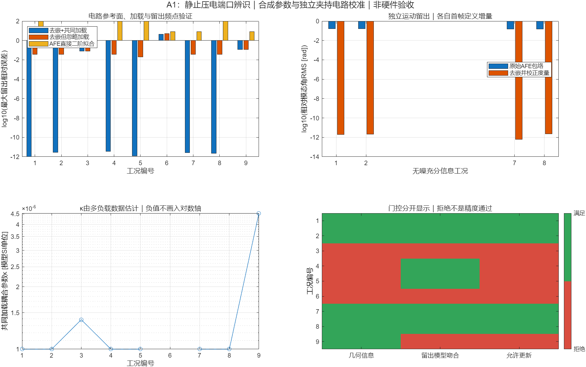
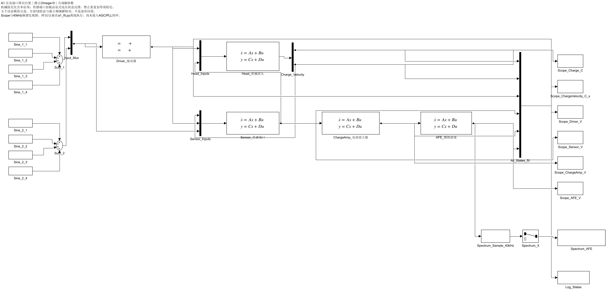
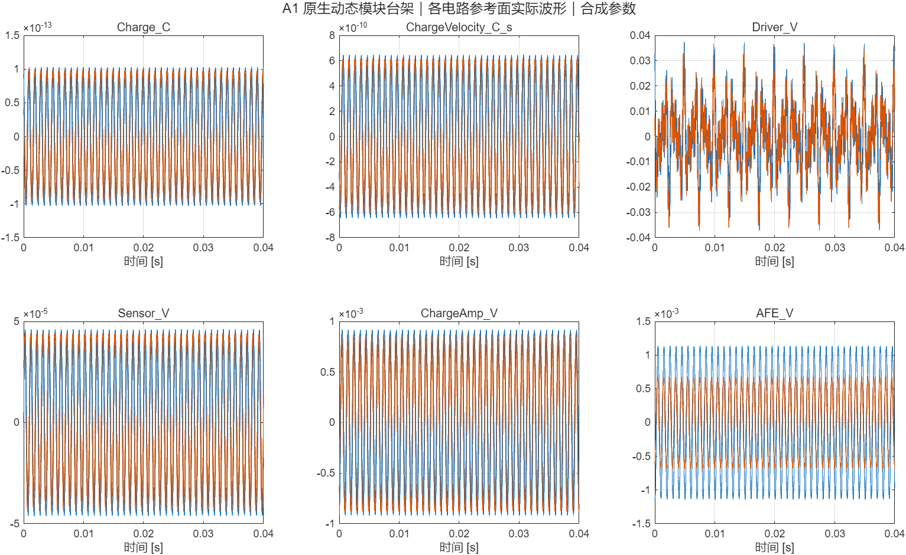

全部是静止、线性、SI合成参数。正例无噪；独立电路校准来自理想夹持夹具。拒绝不等于精度通过，不能据此宣称真实表头无参考自校准或强噪声通过。
case 003：AFE校准失配；004：共轴；005：各向同性；006：5 μV实/虚复相量噪声；009：Cs校准失配。007–009是预先列出的额外参数种子，未当成正式盲测认证。

角度为相对模态角，未换算Bryan机体角。对角度真值没有拟合偏置、时延或旋转常数。


驱动器、机械表头、传感端口、电荷放大器及AFE五个动态模块互连；Scope逐级观察，频谱支路先以40 kHz离散采样，不进入反馈。尚未接AGC/PLL导航控制闭环。
全部12状态对独立频域稳态解，归一化最大误差：1.2799e-11。
| 工况 | 方法 | 类型 | 发布决定 | 最大留出相对误差 | 候选角度RMS [rad] | 预期检查 |
|---|---|---|---|---|---|---|
| case_001 | joint_loading | general_none | 允许更新 | 1.035e-12 | 1.898e-12 | 匹配 |
| case_002 | joint_loading | general_none | 允许更新 | 2.729e-12 | 2.089e-12 | 匹配 |
| case_003 | joint_loading | general_afe | 拒绝；公开角度NaN | 0.07946 | — | 匹配 |
| case_004 | joint_loading | coaxial_none | 拒绝；公开角度NaN | 3.696e-12 | 0.1475 | 匹配 |
| case_005 | joint_loading | isotropic_none | 拒绝；公开角度NaN | 1.186e-12 | — | 匹配 |
| case_006 | joint_loading | general_none | 拒绝；公开角度NaN | 4.328 | — | 匹配 |
| case_007 | joint_loading | general_none | 允许更新 | 2.602e-12 | 6.305e-13 | 匹配 |
| case_008 | joint_loading | general_none | 允许更新 | 2.195e-12 | 2.279e-12 | 匹配 |
| case_009 | joint_loading | general_Cs | 拒绝；公开角度NaN | 0.1218 | 0.01323 | 匹配 |
| case_001 | no_loading | general_none | 拒绝；公开角度NaN | 0.03633 | 1.404e-06 | 匹配 |
| case_002 | no_loading | general_none | 拒绝；公开角度NaN | 0.03613 | 1.345e-05 | 匹配 |
| case_003 | no_loading | general_afe | 拒绝；公开角度NaN | 0.07948 | — | 匹配 |
| case_004 | no_loading | coaxial_none | 拒绝；公开角度NaN | 0.037 | — | 匹配 |
| case_005 | no_loading | isotropic_none | 拒绝；公开角度NaN | 0.01997 | — | 匹配 |
| case_006 | no_loading | general_none | 拒绝；公开角度NaN | 5.091 | — | 匹配 |
| case_007 | no_loading | general_none | 拒绝；公开角度NaN | 0.03612 | 4.892e-06 | 匹配 |
| case_008 | no_loading | general_none | 拒绝；公开角度NaN | 0.03614 | 8.105e-07 | 匹配 |
| case_009 | no_loading | general_Cs | 拒绝；公开角度NaN | 0.1211 | 0.01323 | 匹配 |
| case_001 | raw_second_order | general_none | 拒绝；公开角度NaN | 96.75 | — | 匹配 |
| case_002 | raw_second_order | general_none | 拒绝；公开角度NaN | 8.032 | 0.07779 | 匹配 |
| case_003 | raw_second_order | general_afe | 拒绝；公开角度NaN | 7.969 | 0.1192 | 匹配 |
| case_004 | raw_second_order | coaxial_none | 拒绝；公开角度NaN | 97.08 | — | 匹配 |
| case_005 | raw_second_order | isotropic_none | 拒绝；公开角度NaN | 96.34 | — | 匹配 |
| case_006 | raw_second_order | general_none | 拒绝；公开角度NaN | 7.958 | — | 匹配 |
| case_007 | raw_second_order | general_none | 拒绝；公开角度NaN | 8.036 | 0.07483 | 匹配 |
| case_008 | raw_second_order | general_none | 拒绝；公开角度NaN | 96.87 | — | 匹配 |
| case_009 | raw_second_order | general_Cs | 拒绝；公开角度NaN | 8.134 | 0.1329 | 匹配 |
候选角仅作诊断。模型兼容性使用独立频点；最终运动记录不参与拟合或决定门限。
保存了首轮未做量纲平衡时的病态警告；最终频域求解与各Simulink状态均归一化，不靠屏蔽警告。